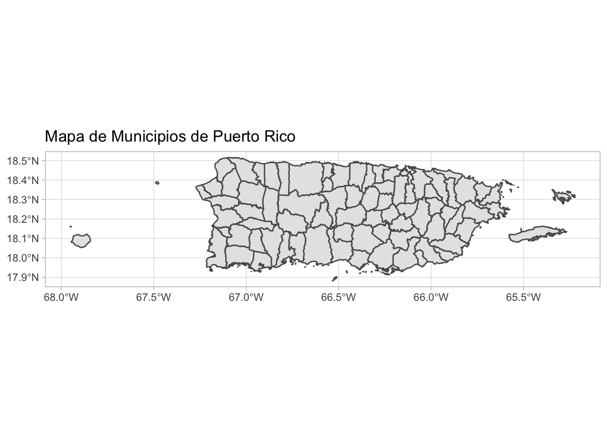
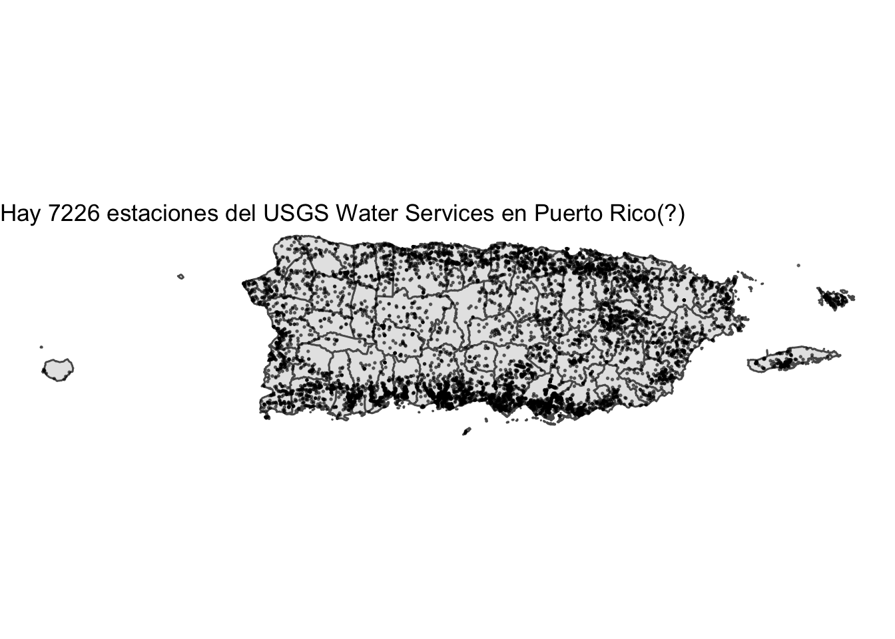
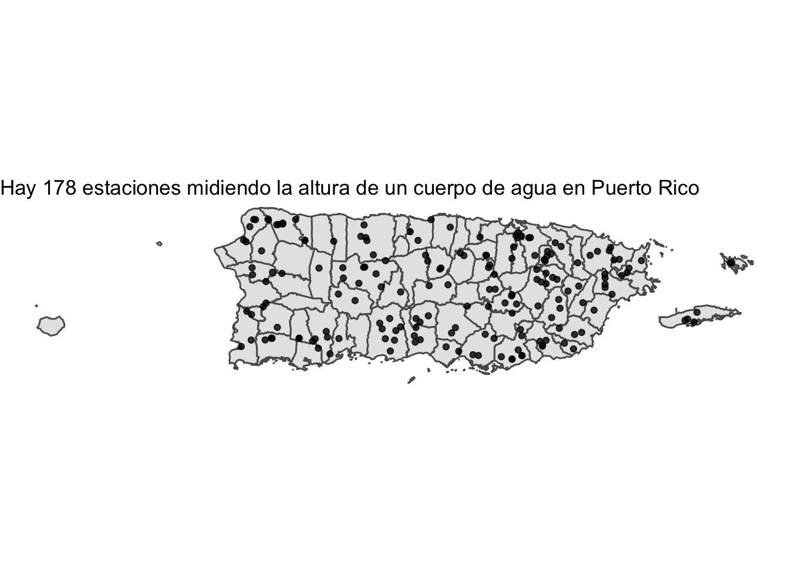
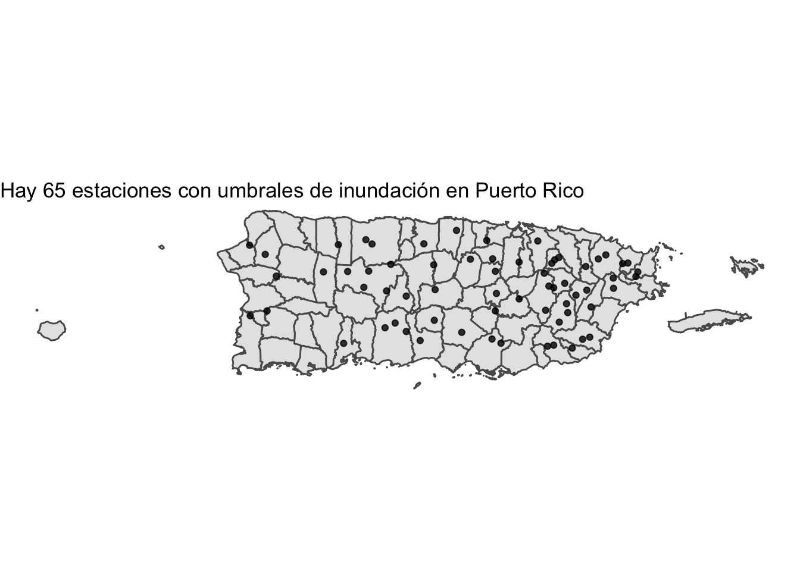
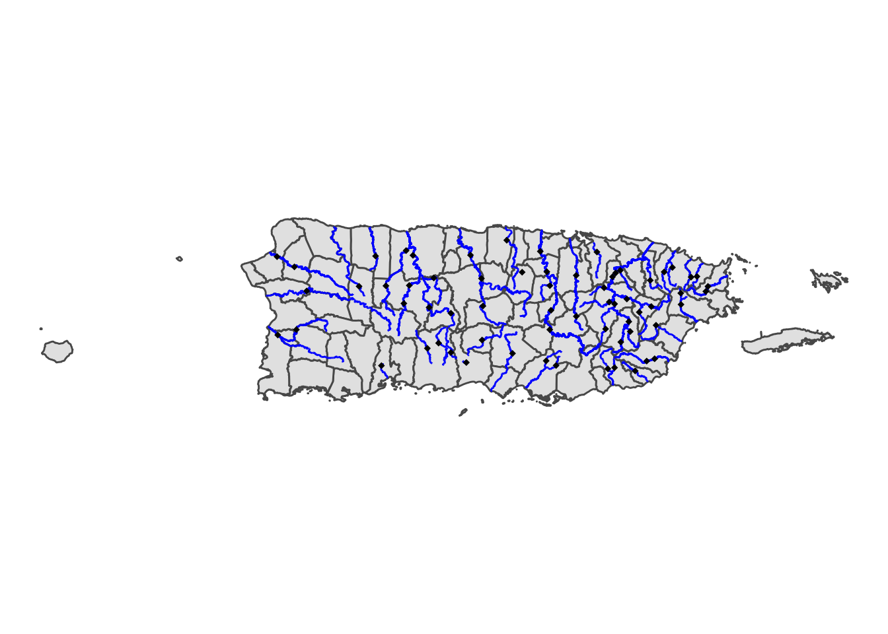
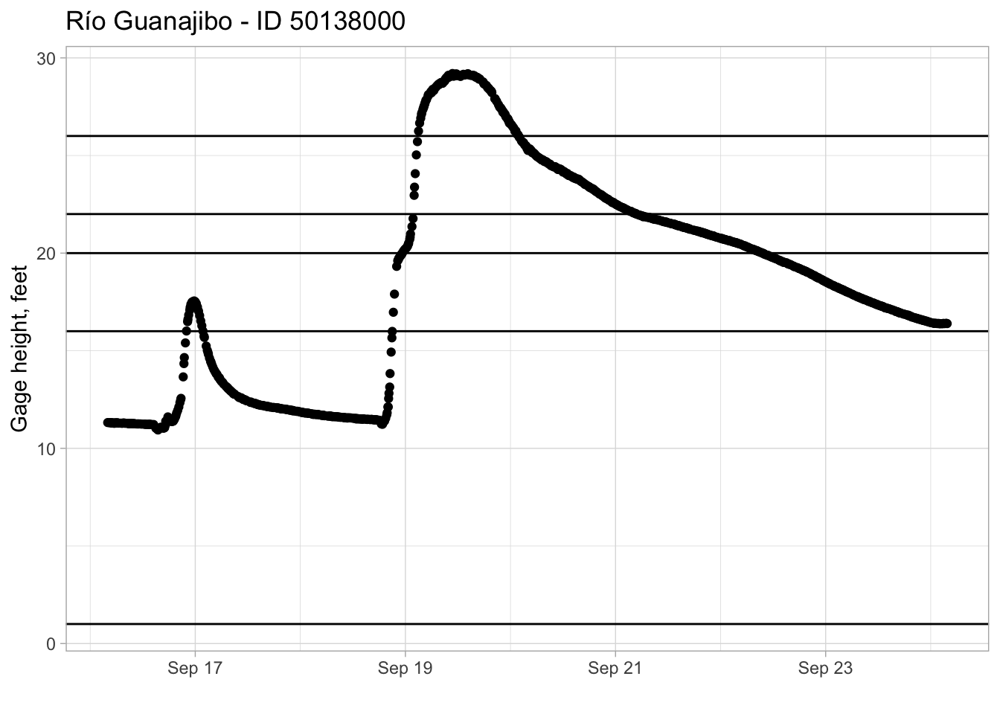
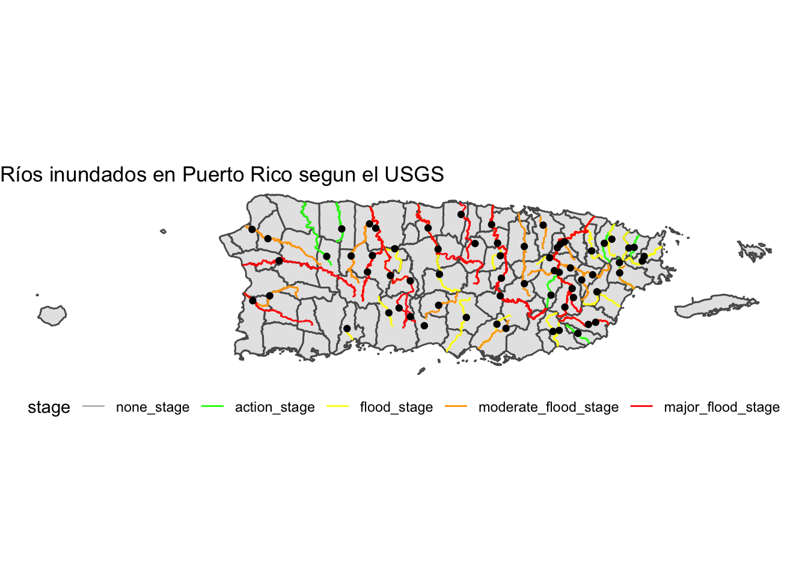
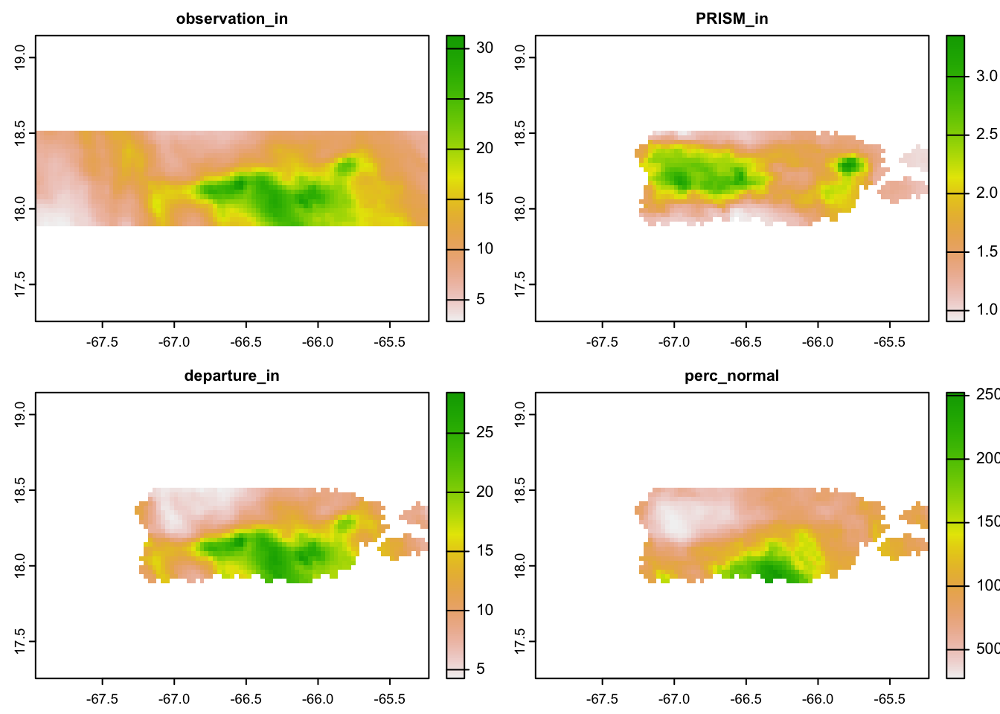
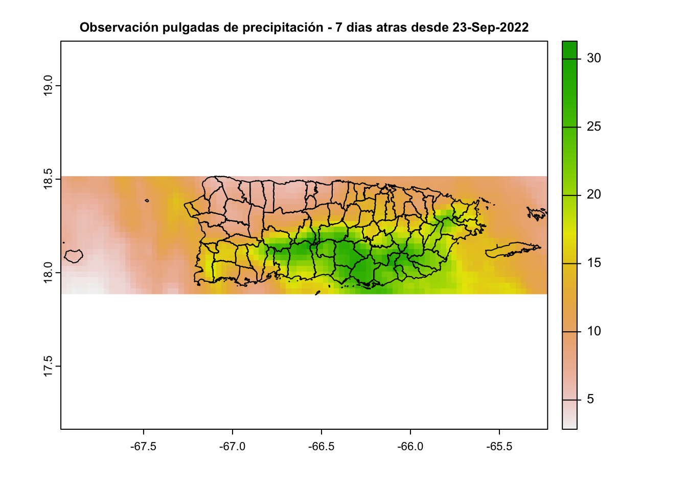

# Importando algunos paquetes:
library(sf)
library(ggplot2)
library(tibble)
library(stringr)
library(httr)
library(tictoc)
library(dplyr)Metodologia - Dashboard Impacto
0. Setup
Unos codigos breves para asegurarse que los demas corran apropiadamente
Un mapa de municipios de Puerto Rico:
pr_map <- st_read('municipios_20pct.json')Reading layer `municipios_20pct' from data source
`/Users/gabriel/Documents/GitHub/Repos/Espacios-Abiertos/impacto-fiona-pr/municipios_20pct.json'
using driver `GeoJSON'
Simple feature collection with 78 features and 11 fields
Geometry type: MULTIPOLYGON
Dimension: XY
Bounding box: xmin: -67.95137 ymin: 17.88124 xmax: -65.22104 ymax: 18.51597
Geodetic CRS: WGS 84pr_map |>
ggplot() +
geom_sf() +
ggtitle('Mapa de Municipios de Puerto Rico') +
theme_light()
Una base de datos para persistir algunas descargas de información:
library(DBI)
mydb <- dbConnect(RSQLite::SQLite(), "my-db.sqlite")1. Ríos e Inundaciones
Este código tiene como proposito descargar datos sobre las etapas de inundacion de rios en Puerto Rico luego del Huracan Fiona. La fuente principal de información es el Sistema Nacional de Información sobre Agua (NWIS) del Servicio Geológico de los Estados Unidos (USGS).
En sus “dashboard” de monitoreo, el USGS presenta tres datos esenciales a este analisis:
- El nombre e identificador de la estación que monitorea un cuerpo de agua
- La altura del río medida (en pies) por la estación al presente y su historial
- Los umbrales correspondiendo a la altura del cuerpo de agua durante una inundación de dicha magnitud
Obteniendo esos datos para la mayor cantidad posible de estaciones permite analisis cercano de cuales cuerpos de agua se inundaron y a que nivel. Para lograr esto, utilizamos un paquete de R desarrollado por el USGS llamado {dataRetrieval}. Su propósito es facilitar la descarga de datos sobre el agua que disponibiliza el USGS. Esta metodología utiliza exhaustivamente las funciones provistas por este paquete que acceleraron el desarrollo de esta herramienta.
library(dataRetrieval)Estaciones del USGS Water Services en Puerto Rico
Inicialmente, se identificaron estaciones de medición que el USGS mantiene en Puerto Rico para monitorear cuerpos de agua:
estacionesPR <- whatNWISsites(stateCd = "PR") |>
st_as_sf(coords = c("dec_long_va", "dec_lat_va"), crs = 4326)
estacionesPR |>
ggplot() +
geom_sf(data=pr_map) +
geom_sf(size=0.3, alpha=0.5) +
ggtitle(paste0('Hay ',nrow(estacionesPR), ' estaciones del USGS Water Services en Puerto Rico(?)')) +
theme_void()
estacionesPR |> as.data.frame()De estas estaciones, se obtienen aquellas que miden la altura del cuerpo de agua. Esto corresponde a la variable de “Gage height, feet” con un código de parametro de “00065”, según la definición de códigos de parámetros del NWIS. Aquellas estaciones cumpliendo con este criterio son:
estacionesPR_con_altura <- whatNWISsites(stateCd = "PR", parameterCd = "00065") |>
st_as_sf(coords = c("dec_long_va", "dec_lat_va"), crs = 4326)
estacionesPR_con_altura |>
ggplot() +
geom_sf(data=pr_map) +
geom_sf(alpha=0.8) +
ggtitle(paste0('Hay ',nrow(estacionesPR_con_altura), ' estaciones midiendo la altura de un cuerpo de agua en Puerto Rico')) +
theme_void()
estacionesPR_con_altura |> as.data.frame()Umbrales de inundación definidos
Segundo, se extraen aquellas estaciones que tambien tienen umbrales de inundacion definidos. Estos umbrales, tambien conocidos como “flood stages”, la NOAA los define como:
la altura establecida del indicador correspondiente a una localización sobre cual un alza en la superficie del agua crea un peligro a vidas, propiedad, o comercio
El detalle sobre distinguir cada localización es importante porque cada cuerpo de agua tiene umbrales distintos, y por ende hay que anotar cada uno:
urltemplate <- "https://waterwatch.usgs.gov/webservices/floodstage?site=${sno}&format=json"
etapas_estaciones <- tibble(site_no = character(), action_stage=character(),
flood_stage=character(), moderate_flood_stage=character(),
major_flood_stage=character(), umbral_encontrado=logical())
empty_row <- etapas_estaciones[1,]
# dbRemoveTable(mydb, "umbrales_inundacion")
if (!dbExistsTable(mydb, "umbrales_inundacion")) {
print("No existe")
print("Creando tabla..")
dbWriteTable(mydb, "umbrales_inundacion", etapas_estaciones)
} else {
print("Si existe. Importando...")
etapas_estaciones <- dbGetQuery(mydb, 'SELECT * FROM umbrales_inundacion')
}[1] "Si existe. Importando..."# 68s 15it 2s-timeout
# 104s 15it 5s-timeout
# 232s 15it 10s-timeout
tic()
for (i in 1:nrow(estacionesPR_con_altura)) {
# if (i > 5) break
print(paste(i, '/', nrow(estacionesPR_con_altura)))
sno <- estacionesPR_con_altura$site_no[i]
if (sno %in% etapas_estaciones$site_no) {
print("Ya obtenido. Continuando...")
next
}
url <- ( str_interp(urltemplate, list(sno=sno)))
tic()
# r <- GET(url, timeout(5))
r <- RETRY("GET", url, timeout(5), times=99)
rcont <- content(r, "parsed")
toc()
if ( length(rcont$sites) > 0) {
print("Umbral sí fue encontrado.")
rsite <- rcont$sites[[1]] %>% purrr::map(~ifelse(is.null(.x), NA, .x))
rsite$umbral_encontrado <- TRUE
next_row <- as_tibble_row(rsite)
# etapas_estaciones <- etapas_estaciones %>% add_row(next_row)
} else {
print("Ningun umbral fue encontrado.")
next_row <- mutate(empty_row, site_no=sno, umbral_encontrado=FALSE)
# etapas_estaciones <- etapas_estaciones %>%
# add_row(next_row)
}
dbAppendTable(mydb, "umbrales_inundacion", next_row)
Sys.sleep(2)
}[1] "1 / 178"
[1] "Ya obtenido. Continuando..."
[1] "2 / 178"
[1] "Ya obtenido. Continuando..."
[1] "3 / 178"
[1] "Ya obtenido. Continuando..."
[1] "4 / 178"
[1] "Ya obtenido. Continuando..."
[1] "5 / 178"
[1] "Ya obtenido. Continuando..."
[1] "6 / 178"
[1] "Ya obtenido. Continuando..."
[1] "7 / 178"
[1] "Ya obtenido. Continuando..."
[1] "8 / 178"
[1] "Ya obtenido. Continuando..."
[1] "9 / 178"
[1] "Ya obtenido. Continuando..."
[1] "10 / 178"
[1] "Ya obtenido. Continuando..."
[1] "11 / 178"
[1] "Ya obtenido. Continuando..."
[1] "12 / 178"
[1] "Ya obtenido. Continuando..."
[1] "13 / 178"
[1] "Ya obtenido. Continuando..."
[1] "14 / 178"
[1] "Ya obtenido. Continuando..."
[1] "15 / 178"
[1] "Ya obtenido. Continuando..."
[1] "16 / 178"
[1] "Ya obtenido. Continuando..."
[1] "17 / 178"
[1] "Ya obtenido. Continuando..."
[1] "18 / 178"
[1] "Ya obtenido. Continuando..."
[1] "19 / 178"
[1] "Ya obtenido. Continuando..."
[1] "20 / 178"
[1] "Ya obtenido. Continuando..."
[1] "21 / 178"
[1] "Ya obtenido. Continuando..."
[1] "22 / 178"
[1] "Ya obtenido. Continuando..."
[1] "23 / 178"
[1] "Ya obtenido. Continuando..."
[1] "24 / 178"
[1] "Ya obtenido. Continuando..."
[1] "25 / 178"
[1] "Ya obtenido. Continuando..."
[1] "26 / 178"
[1] "Ya obtenido. Continuando..."
[1] "27 / 178"
[1] "Ya obtenido. Continuando..."
[1] "28 / 178"
[1] "Ya obtenido. Continuando..."
[1] "29 / 178"
[1] "Ya obtenido. Continuando..."
[1] "30 / 178"
[1] "Ya obtenido. Continuando..."
[1] "31 / 178"
[1] "Ya obtenido. Continuando..."
[1] "32 / 178"
[1] "Ya obtenido. Continuando..."
[1] "33 / 178"
[1] "Ya obtenido. Continuando..."
[1] "34 / 178"
[1] "Ya obtenido. Continuando..."
[1] "35 / 178"
[1] "Ya obtenido. Continuando..."
[1] "36 / 178"
[1] "Ya obtenido. Continuando..."
[1] "37 / 178"
[1] "Ya obtenido. Continuando..."
[1] "38 / 178"
[1] "Ya obtenido. Continuando..."
[1] "39 / 178"
[1] "Ya obtenido. Continuando..."
[1] "40 / 178"
[1] "Ya obtenido. Continuando..."
[1] "41 / 178"
[1] "Ya obtenido. Continuando..."
[1] "42 / 178"
[1] "Ya obtenido. Continuando..."
[1] "43 / 178"
[1] "Ya obtenido. Continuando..."
[1] "44 / 178"
[1] "Ya obtenido. Continuando..."
[1] "45 / 178"
[1] "Ya obtenido. Continuando..."
[1] "46 / 178"
[1] "Ya obtenido. Continuando..."
[1] "47 / 178"
[1] "Ya obtenido. Continuando..."
[1] "48 / 178"
[1] "Ya obtenido. Continuando..."
[1] "49 / 178"
[1] "Ya obtenido. Continuando..."
[1] "50 / 178"
[1] "Ya obtenido. Continuando..."
[1] "51 / 178"
[1] "Ya obtenido. Continuando..."
[1] "52 / 178"
[1] "Ya obtenido. Continuando..."
[1] "53 / 178"
[1] "Ya obtenido. Continuando..."
[1] "54 / 178"
[1] "Ya obtenido. Continuando..."
[1] "55 / 178"
[1] "Ya obtenido. Continuando..."
[1] "56 / 178"
[1] "Ya obtenido. Continuando..."
[1] "57 / 178"
[1] "Ya obtenido. Continuando..."
[1] "58 / 178"
[1] "Ya obtenido. Continuando..."
[1] "59 / 178"
[1] "Ya obtenido. Continuando..."
[1] "60 / 178"
[1] "Ya obtenido. Continuando..."
[1] "61 / 178"
[1] "Ya obtenido. Continuando..."
[1] "62 / 178"
[1] "Ya obtenido. Continuando..."
[1] "63 / 178"
[1] "Ya obtenido. Continuando..."
[1] "64 / 178"
[1] "Ya obtenido. Continuando..."
[1] "65 / 178"
[1] "Ya obtenido. Continuando..."
[1] "66 / 178"
[1] "Ya obtenido. Continuando..."
[1] "67 / 178"
[1] "Ya obtenido. Continuando..."
[1] "68 / 178"
[1] "Ya obtenido. Continuando..."
[1] "69 / 178"
[1] "Ya obtenido. Continuando..."
[1] "70 / 178"
[1] "Ya obtenido. Continuando..."
[1] "71 / 178"
[1] "Ya obtenido. Continuando..."
[1] "72 / 178"
[1] "Ya obtenido. Continuando..."
[1] "73 / 178"
[1] "Ya obtenido. Continuando..."
[1] "74 / 178"
[1] "Ya obtenido. Continuando..."
[1] "75 / 178"
[1] "Ya obtenido. Continuando..."
[1] "76 / 178"
[1] "Ya obtenido. Continuando..."
[1] "77 / 178"
[1] "Ya obtenido. Continuando..."
[1] "78 / 178"
[1] "Ya obtenido. Continuando..."
[1] "79 / 178"
[1] "Ya obtenido. Continuando..."
[1] "80 / 178"
[1] "Ya obtenido. Continuando..."
[1] "81 / 178"
[1] "Ya obtenido. Continuando..."
[1] "82 / 178"
[1] "Ya obtenido. Continuando..."
[1] "83 / 178"
[1] "Ya obtenido. Continuando..."
[1] "84 / 178"
[1] "Ya obtenido. Continuando..."
[1] "85 / 178"
[1] "Ya obtenido. Continuando..."
[1] "86 / 178"
[1] "Ya obtenido. Continuando..."
[1] "87 / 178"
[1] "Ya obtenido. Continuando..."
[1] "88 / 178"
[1] "Ya obtenido. Continuando..."
[1] "89 / 178"
[1] "Ya obtenido. Continuando..."
[1] "90 / 178"
[1] "Ya obtenido. Continuando..."
[1] "91 / 178"
[1] "Ya obtenido. Continuando..."
[1] "92 / 178"
[1] "Ya obtenido. Continuando..."
[1] "93 / 178"
[1] "Ya obtenido. Continuando..."
[1] "94 / 178"
[1] "Ya obtenido. Continuando..."
[1] "95 / 178"
[1] "Ya obtenido. Continuando..."
[1] "96 / 178"
[1] "Ya obtenido. Continuando..."
[1] "97 / 178"
[1] "Ya obtenido. Continuando..."
[1] "98 / 178"
[1] "Ya obtenido. Continuando..."
[1] "99 / 178"
[1] "Ya obtenido. Continuando..."
[1] "100 / 178"
[1] "Ya obtenido. Continuando..."
[1] "101 / 178"
[1] "Ya obtenido. Continuando..."
[1] "102 / 178"
[1] "Ya obtenido. Continuando..."
[1] "103 / 178"
[1] "Ya obtenido. Continuando..."
[1] "104 / 178"
[1] "Ya obtenido. Continuando..."
[1] "105 / 178"
[1] "Ya obtenido. Continuando..."
[1] "106 / 178"
[1] "Ya obtenido. Continuando..."
[1] "107 / 178"
[1] "Ya obtenido. Continuando..."
[1] "108 / 178"
[1] "Ya obtenido. Continuando..."
[1] "109 / 178"
[1] "Ya obtenido. Continuando..."
[1] "110 / 178"
[1] "Ya obtenido. Continuando..."
[1] "111 / 178"
[1] "Ya obtenido. Continuando..."
[1] "112 / 178"
[1] "Ya obtenido. Continuando..."
[1] "113 / 178"
[1] "Ya obtenido. Continuando..."
[1] "114 / 178"
[1] "Ya obtenido. Continuando..."
[1] "115 / 178"
[1] "Ya obtenido. Continuando..."
[1] "116 / 178"
[1] "Ya obtenido. Continuando..."
[1] "117 / 178"
[1] "Ya obtenido. Continuando..."
[1] "118 / 178"
[1] "Ya obtenido. Continuando..."
[1] "119 / 178"
[1] "Ya obtenido. Continuando..."
[1] "120 / 178"
[1] "Ya obtenido. Continuando..."
[1] "121 / 178"
[1] "Ya obtenido. Continuando..."
[1] "122 / 178"
[1] "Ya obtenido. Continuando..."
[1] "123 / 178"
[1] "Ya obtenido. Continuando..."
[1] "124 / 178"
[1] "Ya obtenido. Continuando..."
[1] "125 / 178"
[1] "Ya obtenido. Continuando..."
[1] "126 / 178"
[1] "Ya obtenido. Continuando..."
[1] "127 / 178"
[1] "Ya obtenido. Continuando..."
[1] "128 / 178"
[1] "Ya obtenido. Continuando..."
[1] "129 / 178"
[1] "Ya obtenido. Continuando..."
[1] "130 / 178"
[1] "Ya obtenido. Continuando..."
[1] "131 / 178"
[1] "Ya obtenido. Continuando..."
[1] "132 / 178"
[1] "Ya obtenido. Continuando..."
[1] "133 / 178"
[1] "Ya obtenido. Continuando..."
[1] "134 / 178"
[1] "Ya obtenido. Continuando..."
[1] "135 / 178"
[1] "Ya obtenido. Continuando..."
[1] "136 / 178"
[1] "Ya obtenido. Continuando..."
[1] "137 / 178"
[1] "Ya obtenido. Continuando..."
[1] "138 / 178"
[1] "Ya obtenido. Continuando..."
[1] "139 / 178"
[1] "Ya obtenido. Continuando..."
[1] "140 / 178"
[1] "Ya obtenido. Continuando..."
[1] "141 / 178"
[1] "Ya obtenido. Continuando..."
[1] "142 / 178"
[1] "Ya obtenido. Continuando..."
[1] "143 / 178"
[1] "Ya obtenido. Continuando..."
[1] "144 / 178"
[1] "Ya obtenido. Continuando..."
[1] "145 / 178"
[1] "Ya obtenido. Continuando..."
[1] "146 / 178"
[1] "Ya obtenido. Continuando..."
[1] "147 / 178"
[1] "Ya obtenido. Continuando..."
[1] "148 / 178"
[1] "Ya obtenido. Continuando..."
[1] "149 / 178"
[1] "Ya obtenido. Continuando..."
[1] "150 / 178"
[1] "Ya obtenido. Continuando..."
[1] "151 / 178"
[1] "Ya obtenido. Continuando..."
[1] "152 / 178"
[1] "Ya obtenido. Continuando..."
[1] "153 / 178"
[1] "Ya obtenido. Continuando..."
[1] "154 / 178"
[1] "Ya obtenido. Continuando..."
[1] "155 / 178"
[1] "Ya obtenido. Continuando..."
[1] "156 / 178"
[1] "Ya obtenido. Continuando..."
[1] "157 / 178"
[1] "Ya obtenido. Continuando..."
[1] "158 / 178"
[1] "Ya obtenido. Continuando..."
[1] "159 / 178"
[1] "Ya obtenido. Continuando..."
[1] "160 / 178"
[1] "Ya obtenido. Continuando..."
[1] "161 / 178"
[1] "Ya obtenido. Continuando..."
[1] "162 / 178"
[1] "Ya obtenido. Continuando..."
[1] "163 / 178"
[1] "Ya obtenido. Continuando..."
[1] "164 / 178"
[1] "Ya obtenido. Continuando..."
[1] "165 / 178"
[1] "Ya obtenido. Continuando..."
[1] "166 / 178"
[1] "Ya obtenido. Continuando..."
[1] "167 / 178"
[1] "Ya obtenido. Continuando..."
[1] "168 / 178"
[1] "Ya obtenido. Continuando..."
[1] "169 / 178"
[1] "Ya obtenido. Continuando..."
[1] "170 / 178"
[1] "Ya obtenido. Continuando..."
[1] "171 / 178"
[1] "Ya obtenido. Continuando..."
[1] "172 / 178"
[1] "Ya obtenido. Continuando..."
[1] "173 / 178"
[1] "Ya obtenido. Continuando..."
[1] "174 / 178"
[1] "Ya obtenido. Continuando..."
[1] "175 / 178"
[1] "Ya obtenido. Continuando..."
[1] "176 / 178"
[1] "Ya obtenido. Continuando..."
[1] "177 / 178"
[1] "Ya obtenido. Continuando..."
[1] "178 / 178"
[1] "Ya obtenido. Continuando..."toc()0.018 sec elapsedetapas_estaciones <- dbGetQuery(mydb, 'SELECT * FROM umbrales_inundacion') |>
mutate(umbral_encontrado = as.logical(umbral_encontrado))
etapas_estacionesFuera de las 178 estaciones midiendo la altura del cuerpo de agua, solo 65 definen sus umbrales de inundación:
estacionesPR_con_umbrales <- estacionesPR_con_altura |>
filter(site_no %in% filter(etapas_estaciones, umbral_encontrado)$site_no)
estacionesPR_con_umbrales |>
ggplot() +
geom_sf(data=pr_map) +
geom_sf(alpha=0.8) +
ggtitle(paste0('Hay ',nrow(estacionesPR_con_umbrales), ' estaciones con umbrales de inundación en Puerto Rico')) +
theme_void()
estacionesPR_con_umbrales |> as.data.frame()Líneas de flujo de ríos
El portal del USGS tambien incluye las líneas de flujos para los ríos que monitorean. Estas son descargadas para propósitos de complementar la visualización.
tic()
stagesites_flow <- NULL
for (i in 1:nrow(estacionesPR_con_umbrales)) {
print(paste(i, '/', nrow(estacionesPR_con_umbrales)))
tic()
siteInfo <- estacionesPR_con_umbrales[i,]
siteNo <- siteInfo$site_no
site_flowlines <- findNLDI(nwis = siteNo,
nav = c("UM", "DM"),
find = c("flowlines"),
distance_km = 999
)
if ((length(site_flowlines) == 0) | (!("UM_flowlines" %in% names(site_flowlines)))) {
print(paste0("Skipping ", siteNo, " pq no encontramos datos de rio"))
next
}
siteUM <- site_flowlines$UM_flowlines %>%
dplyr::mutate(site_no = siteNo, nav = "UM")
siteDM <- site_flowlines$DM_flowlines %>%
dplyr::mutate(site_no = siteNo, nav = "DM")
siteFlow <- rbind(siteUM, siteDM)
if (is.null(stagesites_flow)) {
stagesites_flow <- siteFlow
} else {
stagesites_flow <- rbind(stagesites_flow, siteFlow)
}
toc()
# if (i==1) break
}[1] "1 / 65"
0.611 sec elapsed
[1] "2 / 65"
0.246 sec elapsed
[1] "3 / 65"
0.248 sec elapsed
[1] "4 / 65"
0.248 sec elapsed
[1] "5 / 65"
0.26 sec elapsed
[1] "6 / 65"
0.24 sec elapsed
[1] "7 / 65"
0.238 sec elapsed
[1] "8 / 65"
0.218 sec elapsed
[1] "9 / 65"
0.25 sec elapsed
[1] "10 / 65"
0.257 sec elapsed
[1] "11 / 65"
0.252 sec elapsed
[1] "12 / 65"
0.234 sec elapsed
[1] "13 / 65"
0.257 sec elapsed
[1] "14 / 65"
0.211 sec elapsed
[1] "15 / 65"
0.269 sec elapsed
[1] "16 / 65"
0.245 sec elapsed
[1] "17 / 65"
0.258 sec elapsed
[1] "18 / 65"
0.275 sec elapsed
[1] "19 / 65"
0.232 sec elapsed
[1] "20 / 65"
0.207 sec elapsed
[1] "21 / 65"Request failed [404]. Retrying in 1 seconds...
Request failed [404]. Retrying in 1 seconds...Error in: https://labs.waterdata.usgs.gov/api/nldi/linked-data/nwissite/USGS-50037000/navigation/UM/flowlines?distance=999Request failed [404]. Retrying in 1 seconds...Request failed [404]. Retrying in 1.9 seconds...Error in: https://labs.waterdata.usgs.gov/api/nldi/linked-data/nwissite/USGS-50037000/navigation/DM/flowlines?distance=999[1] "Skipping 50037000 pq no encontramos datos de rio"
[1] "22 / 65"
0.306 sec elapsed
[1] "23 / 65"
0.204 sec elapsed
[1] "24 / 65"
0.245 sec elapsed
[1] "25 / 65"
0.246 sec elapsed
[1] "26 / 65"
0.225 sec elapsed
[1] "27 / 65"Request failed [404]. Retrying in 1 seconds...Request failed [404]. Retrying in 2.8 seconds...Error in: https://labs.waterdata.usgs.gov/api/nldi/linked-data/nwissite/USGS-50038300/navigation/UM/flowlines?distance=999Request failed [404]. Retrying in 1.4 seconds...Request failed [404]. Retrying in 1.8 seconds...Error in: https://labs.waterdata.usgs.gov/api/nldi/linked-data/nwissite/USGS-50038300/navigation/DM/flowlines?distance=999[1] "Skipping 50038300 pq no encontramos datos de rio"
[1] "28 / 65"
0.305 sec elapsed
[1] "29 / 65"
0.204 sec elapsed
[1] "30 / 65"
0.267 sec elapsed
[1] "31 / 65"
0.246 sec elapsed
[1] "32 / 65"
0.224 sec elapsed
[1] "33 / 65"
0.241 sec elapsed
[1] "34 / 65"
0.206 sec elapsed
[1] "35 / 65"
0.251 sec elapsed
[1] "36 / 65"
0.226 sec elapsed
[1] "37 / 65"
0.21 sec elapsed
[1] "38 / 65"
0.236 sec elapsed
[1] "39 / 65"
0.248 sec elapsed
[1] "40 / 65"
0.216 sec elapsed
[1] "41 / 65"
0.244 sec elapsed
[1] "42 / 65"
0.259 sec elapsed
[1] "43 / 65"
0.218 sec elapsed
[1] "44 / 65"
0.272 sec elapsed
[1] "45 / 65"
0.23 sec elapsed
[1] "46 / 65"
0.221 sec elapsed
[1] "47 / 65"
0.248 sec elapsed
[1] "48 / 65"
0.238 sec elapsed
[1] "49 / 65"
0.307 sec elapsed
[1] "50 / 65"
0.218 sec elapsed
[1] "51 / 65"
0.214 sec elapsed
[1] "52 / 65"
0.246 sec elapsed
[1] "53 / 65"
0.235 sec elapsed
[1] "54 / 65"
0.234 sec elapsed
[1] "55 / 65"
0.243 sec elapsed
[1] "56 / 65"
0.238 sec elapsed
[1] "57 / 65"
0.224 sec elapsed
[1] "58 / 65"
0.236 sec elapsed
[1] "59 / 65"
0.221 sec elapsed
[1] "60 / 65"
0.406 sec elapsed
[1] "61 / 65"
0.228 sec elapsed
[1] "62 / 65"
0.209 sec elapsed
[1] "63 / 65"
0.236 sec elapsed
[1] "64 / 65"
0.248 sec elapsed
[1] "65 / 65"
0.218 sec elapsedtoc()17 sec elapsed# stagesites_flow <- stagesites_flow %>%
# # select(-stage) %>%
# merge(select(stagesites_crossed, site_no, stage), by='site_no') %>%
# arrange(stage)
stagesites_flowggplot() +
geom_sf(data = pr_map) +
geom_sf(data = stagesites_flow, color='blue') +
geom_sf(data = estacionesPR_con_umbrales, color='black', size=1.5, shape=18) +
theme_void()
Historial de altura de ríos
El último dato necesario para completar este análisis es el historial de la altura de cada río a evaluar. Con esta información, podemos determinar cuantos ríos se inundaron.
stagesites_ts <- NULL
for (i in 1:nrow(estacionesPR_con_umbrales)) {
print(paste(i, '/', nrow(estacionesPR_con_umbrales)))
siteInfo <- estacionesPR_con_umbrales[i,]
siteNo <- siteInfo$site_no
stages <- etapas_estaciones %>%
dplyr::filter(site_no == siteNo) %>% dplyr::select(-site_no) %>% as.list()
pCode <- "00065"
start.date <- "2022-09-16"
end.date <- "2022-09-23"
sitets <- readNWISuv(siteNumbers = siteNo,
parameterCd = pCode,
startDate = start.date,
endDate = end.date)
sitets <- renameNWISColumns(sitets)
sitets
if (is.null(stagesites_ts)) {
stagesites_ts <- sitets
} else {
stagesites_ts <- rbind(stagesites_ts, sitets)
}
# if (i==3) break
}[1] "1 / 65"
[1] "2 / 65"
[1] "3 / 65"
[1] "4 / 65"
[1] "5 / 65"
[1] "6 / 65"
[1] "7 / 65"
[1] "8 / 65"
[1] "9 / 65"
[1] "10 / 65"
[1] "11 / 65"
[1] "12 / 65"
[1] "13 / 65"
[1] "14 / 65"
[1] "15 / 65"
[1] "16 / 65"
[1] "17 / 65"
[1] "18 / 65"
[1] "19 / 65"
[1] "20 / 65"
[1] "21 / 65"
[1] "22 / 65"
[1] "23 / 65"
[1] "24 / 65"
[1] "25 / 65"
[1] "26 / 65"
[1] "27 / 65"
[1] "28 / 65"
[1] "29 / 65"
[1] "30 / 65"
[1] "31 / 65"
[1] "32 / 65"
[1] "33 / 65"
[1] "34 / 65"
[1] "35 / 65"
[1] "36 / 65"
[1] "37 / 65"
[1] "38 / 65"
[1] "39 / 65"
[1] "40 / 65"
[1] "41 / 65"
[1] "42 / 65"
[1] "43 / 65"
[1] "44 / 65"
[1] "45 / 65"
[1] "46 / 65"
[1] "47 / 65"
[1] "48 / 65"
[1] "49 / 65"
[1] "50 / 65"
[1] "51 / 65"
[1] "52 / 65"
[1] "53 / 65"
[1] "54 / 65"
[1] "55 / 65"
[1] "56 / 65"
[1] "57 / 65"
[1] "58 / 65"
[1] "59 / 65"
[1] "60 / 65"
[1] "61 / 65"
[1] "62 / 65"
[1] "63 / 65"
[1] "64 / 65"
[1] "65 / 65"stagesites_tsUmbrales de inundación cruzados
Por ejemplo, este es el historial de altura del Rio Guanajibo en Hormigueros durante el Huracán Fiona:
rioguanajibo <- stagesites_ts |> dplyr::filter(site_no == 50138000)
rioguanajibo_umbrales <- etapas_estaciones %>%
dplyr::filter(site_no == 50138000) %>% dplyr::select(-site_no) %>% as.list()
parameterInfo <- attr(rioguanajibo, "variableInfo")
rioguanajibo |>
ggplot(aes(dateTime, GH_Inst)) +
geom_point() +
xlab("") +
ylab(parameterInfo$variableDescription) +
ggtitle('Río Guanajibo - ID 50138000') +
geom_hline(yintercept = as.numeric(rioguanajibo_umbrales)) +
theme_light()
Estos datos crudos indican que el Río Guanajibo sobrepasó el mayor nivel de inundación. Se resume esta información obteniendo la altura máxima de cada río durante el transcurso del huracán y comparandola a sus umbrales:
# Altura máxima de cada río
stagesites_max <-
stagesites_ts %>%
group_by(site_no) %>%
arrange(-GH_Inst) %>%
filter(row_number()==1) %>%
ungroup()
stage_levels <- c("none_stage", "action_stage", "flood_stage", "moderate_flood_stage", "major_flood_stage")
estacionesPR_umbrales_cruzados <-
stagesites_max %>% merge(etapas_estaciones, by='site_no', how='left') %>%
mutate(none_stage = "0", across(ends_with("stage"), as.numeric)) %>%
tidyr::pivot_longer(ends_with('_stage'), names_to='stage', values_to='GH_stage') %>%
mutate(over_stage = GH_Inst >= GH_stage) %>%
group_by(site_no) %>%
filter(over_stage==TRUE) %>%
arrange(site_no, -GH_stage) %>%
filter(row_number() == 1) %>%
dplyr::ungroup() %>%
mutate(stage = factor(stage, levels=stage_levels))
estacionesPR_umbrales_cruzadosY graficandolos estos niveles de inundación serían:
stage_colors <- c(none_stage = 'grey', action_stage='green',
flood_stage='yellow',moderate_flood_stage='orange',
major_flood_stage='red')
estacionesPR_umbrales_cruzados_con_rios <-
estacionesPR_umbrales_cruzados |>
merge(stagesites_flow, how='left', by='site_no') |>
merge(st_drop_geometry(estacionesPR_con_umbrales), how='left', by='site_no')
estacionesPR_umbrales_cruzados_con_rios |>
ggplot() +
geom_sf(data = pr_map) +
geom_sf(aes(geometry=geometry, color=stage)) +
geom_sf(data=estacionesPR_con_umbrales, color='black') +
scale_color_manual(values = stage_colors) +
theme_void() +
ggtitle("Ríos inundados en Puerto Rico segun el USGS") +
theme(legend.position="bottom")
Exportando los ríos y sus niveles de inundación
Se guardan ambos las lineas de flujo de los ríos y sus niveles de inundación en un archivo GeoJSON para uso en Tableau:
estacionesPR_umbrales_cruzados_con_riosestacionesPR_umbrales_cruzados_con_rios %>%
arrange(stage) %>%
st_write('output/estacionesPR_umbrales_cruzados_con_rios.geojson',
delete_dsn=TRUE) # rios_attempt_2 en Tableau, mas o menosDeleting source `output/estacionesPR_umbrales_cruzados_con_rios.geojson' using driver `GeoJSON'
Writing layer `estacionesPR_umbrales_cruzados_con_rios' to data source
`output/estacionesPR_umbrales_cruzados_con_rios.geojson' using driver `GeoJSON'
Writing 3535 features with 17 fields and geometry type Line String.2. Precipitación acumulada por municipio
Esta metodología utiliza como fuente el Advanced Hydrological Prediction Service del NOAA. Ellos archivan observaciones pasadas de lluvias acumuladas durante un set periodo de días y disponibilizan su uso.
Descarga de datos
Para obtener los datos de precipitación, se accesa el portal del NOAA y eligen las siguientes opciones:
- Tiempo: Diario
- Formato: GeoTIFF
- Time Range: Día
- Fecha: 23 de Septiembre de 2022
- Descarga: Últimos 7 días
Antes de confirmar la descarga usando el botón etiquetado ‘Download’, el portal debería mencionar que se incluye un archivo titulado nws_precip_last7days_20220923_pr.tif . Este archivo .tif corresponde a la región de Puerto Rico y es adjuntado junto a este documento.
Abrir el archivo GeoTIFF
Formatos tipo ‘raster’ como el GeoTIFF descargado requieren paquetes como {terra} para abrirlos a través de R. Este paquete provee funciones para manipular la “imagen” de datos provista por NOAA y resumirla a nivel municipal.
library(terra)# Mapa de Puerto Rico
pr_terra<-vect(pr_map)
pr_extent<-ext(pr_terra)lluvia_raster <- rast("nws_precip_last7days_20220923_pr.tif") %>%
project("epsg:4326") %>%
crop(pr_extent)
names(lluvia_raster) <- c('observation_in', 'PRISM_in', 'departure_in', 'perc_normal')
plot(lluvia_raster)
plot( lluvia_raster[[1]], main='Observación pulgadas de precipitación - 7 dias atras desde 23-Sep-2022' )
lines(pr_terra)
Máximo por municipio
Las pulgadas de lluvia que recibio cada municipio no estuvierion distribuidas igualmente. No obstante, se elige lo máximo que fue observado dentro de los límites de cada municipio:
max_lluvia <- NULL
for (i in 1:nrow(pr_terra)) {
muni_terra <- pr_terra[i,]
muni <- muni_terra$municipio
muni_lluvia_max <- lluvia_raster[[1]] %>% extract(muni_terra) %>% max()
muni_tibble <- tibble(municipio = muni, lluvia = muni_lluvia_max)
if (is.null(max_lluvia)) {
max_lluvia <- muni_tibble
} else {
max_lluvia <- rbind(max_lluvia, muni_tibble)
}
}
max_lluvia <- max_lluvia |>
mutate(lluvia = round(lluvia,1)) |>
merge(select(pr_map, municipio), how='left', by='municipio')
max_lluviamax_lluvia |>
ggplot() +
geom_sf(color='white', lwd=0.1, aes(fill=lluvia, geometry=geometry)) +
theme_void() +
scale_fill_continuous(name = "Pulgadas de lluvia") +
theme(legend.position="bottom") +
ggtitle("Precipitación recibida por municipio")Exportando datos de lluvia
Se exporta un csv con el municipio y la cantidad de lluvia para uso con Tableau:
max_lluvia |>
select(-geometry) |>
readr::write_csv('lluvias_maximas_municipios.csv')3. Hilera de Vientos
El Centro Nacional de Huracanes (NHC) de la Administración Nacional Oceánica y Atmosférica (NOAA) publicó un reporte de datos meteorológicos post-huracán para Fiona. Incluido es un historial o hilera de vientos que ilustran la magnitud de vientos que abatieron cada area tras el paso del huracán.
La región sombreada en dorado cubre areas impactadas por vientos de intensidad de tormenta tropical. Las areas en rojo correspondén a regiones que recibieron vientos huracanados.
Encima del gráfico del reporte, NOAA incluye un enlace para descargar esta hilera en un formato GIS-compatible (ShapeFile). Como parte de esta metodología, descargamos el archivo ShapeFile y lo convertimos a formato GeoJSON a través de la herramienta MapShaper. Este archivo convertido se adjuntó a este documento.
# Leer archivo GeoJSON de la hilera del huracán
hilera_fiona <- st_read('AL072022_windswath.json')Reading layer `AL072022_windswath' from data source
`/Users/gabriel/Documents/GitHub/Repos/Espacios-Abiertos/impacto-fiona-pr/AL072022_windswath.json'
using driver `GeoJSON'
Simple feature collection with 6 features and 8 fields
Geometry type: POLYGON
Dimension: XY
Bounding box: xmin: -73.65411 ymin: 14.48352 xmax: -49.04039 ymax: 52.45707
Geodetic CRS: WGS 84# Graficar hilera
hilera_fiona |>
ggplot() +
geom_sf(lwd=0, aes(fill=STRRADII)) + # Color segun variable STRADII
scale_fill_manual(name="Categoría de Vientos (kts)", # Cual color a cual categoría
values=c("34"="#f4a100","50"="#f4a100","64"="#a93440")) +
ggtitle('Hilera de vientos del Huracán Fiona') +
theme_light()
Este GeoJSON luego se envía para graficar en la plataforma de Tableau, donde se ajustan los colores y nombres de las categorías para presentación.
Referencias
dataRetrieval
citation(package = "dataRetrieval")
To cite dataRetrieval in publications, please use:
De Cicco, L.A., Hirsch, R.M., Lorenz, D., Watkins, W.D., 2022,
dataRetrieval: R packages for discovering and retrieving water data
available from Federal hydrologic web services, v.2.7.11,
doi:10.5066/P9X4L3GE
A BibTeX entry for LaTeX users is
@Manual{,
author = {Laura A. {De Cicco} and David Lorenz and Robert M. Hirsch and William Watkins and Mike Johnson},
title = {dataRetrieval: R packages for discovering and retrieving water data available from U.S. federal hydrologic web services},
publisher = {U.S. Geological Survey},
address = {Reston, VA},
version = {2.7.11},
institution = {U.S. Geological Survey},
year = {2022},
doi = {10.5066/P9X4L3GE},
url = {https://code.usgs.gov/water/dataRetrieval},
}